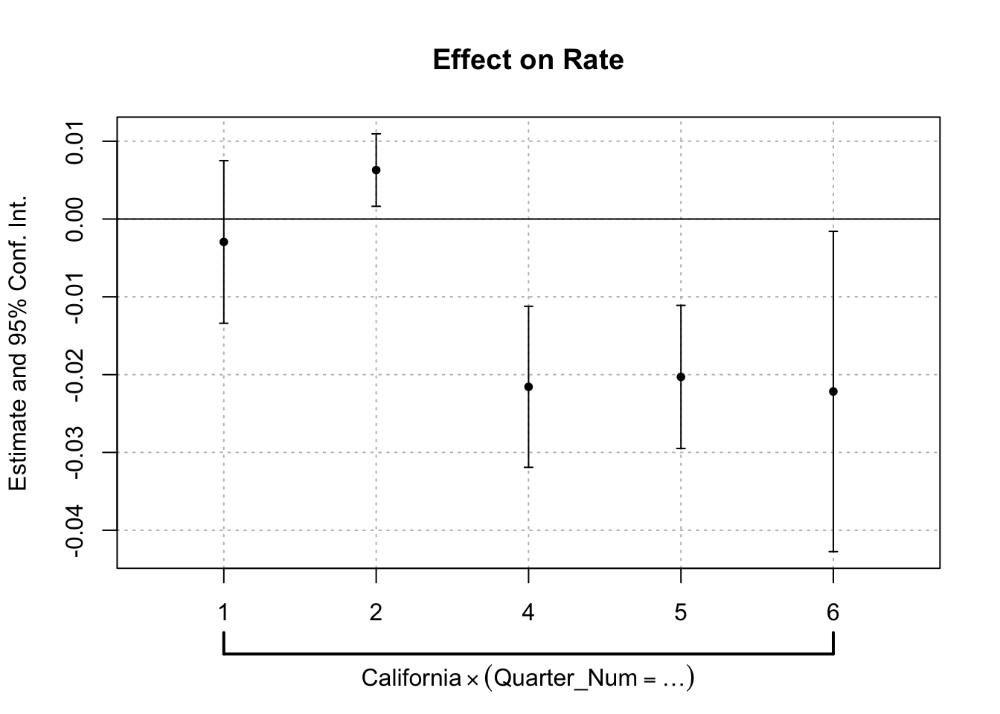

Difference-in-Differences (DID) is a foundational method in causal inference, used to estimate treatment effects in observational settings by comparing treated and untreated units over time. This tutorial walks you through the key steps in implementing DID in R. You’ll learn how to prepare data for DID analysis, visualize group trends, and estimate treatment effects using interaction models. We’ll also explore techniques to assess the credibility of your assumptions and extend the basic DID framework to handle more complex research designs.
By the end of this tutorial, you will be familiar with:
1 . Basic Difference-in-Differences (DID) model
2 . Evaluating the parallel trends assumption
3 . Exploring the long-term effects of treatment
4 . Modeling rollout designs
Front-end Matters
DID estimation is closely related to Two-Way Fixed Effects (TWFE) models. To implement these models efficiently in R, we’ll use the fixest package, which offers a flexible and high-performance framework for fixed effects regression.
We’ll also use: tidyverse for data wrangling, plotting, and reshaping; and wooldridge to access the wagepan dataset, a common example for panel data applications.
── Attaching core tidyverse packages ──────────────────────── tidyverse 2.0.0 ──
✔ dplyr 1.1.4 ✔ readr 2.1.5
✔ forcats 1.0.0 ✔ stringr 1.5.1
✔ ggplot2 3.5.1 ✔ tibble 3.2.1
✔ lubridate 1.9.4 ✔ tidyr 1.3.1
✔ purrr 1.0.2
── Conflicts ────────────────────────────────────────── tidyverse_conflicts() ──
✖ dplyr::filter() masks stats::filter()
✖ dplyr::lag() masks stats::lag()
ℹ Use the conflicted package (<http://conflicted.r-lib.org/>) to force all conflicts to become errors
library(foreign)data("wagepan")
Warning in data("wagepan"): data set 'wagepan' not found
Basic DID: Textbook Organ Donations Example
In this example from The Effect, we estimate the causal effect of California’s 2011 organ donation policy using a Difference-in-Differences design. The policy changed organ donation from ‘opt in’ to ‘ative choice’ when renewing their driver’s license. We define the treatment as California in quarters Q3 2011, Q4 2011, and Q1 2012, and use other U.S. states as the control group. By applying a Two-Way Fixed Effects model with state and quarter fixed effects, we isolate the treatment effect while controlling for state-specific characteristics and common time shocks.
The dataset has four columns: State, Quarter, Rate, and Quarter Number. To estimate DID model, we first need to define: The treated group: California and the post-treatment periods: Q32011, Q42011, and Q12012.
We’ll create a binary Treated variable that equals 1 for California in those three quarters, and 0 otherwise. Then we’ll estimate a TWFE model using the fixest package. This allows us to control for state-specific characteristics and quarter-specific shocks.
# Define treated group: California in post-treatment quartersod <- od %>%mutate(Treated = State =='California'& Quarter %in%c('Q32011', 'Q42011', 'Q12012'))head(od)
TreatedTRUE is the DID estimate — it captures the difference in average donor registration rates for California after the policy change, relative to the change in control states over the same period The policy is associated with a 2.25 percentage point decrease in donor registration rates, compared to what we would have expected based on the control states. The result is statistically significant.
Evaluating Parallel Trends
Test of prior trends
Before we can trust a Difference-in-Differences (DID) estimate, we need to evaluate whether the treated and control groups were following similar trends before the treatment — this is known as the parallel trends assumption. One way to assess this is by running a prior trend test, which looks only at pre-treatment data. In this test, we regress the outcome on time (as a numeric variable), a treatment group indicator, and an interaction between the two. The key idea is that if the two groups had similar trends before treatment, the interaction term — which captures whether the slope differs by group — should be statistically indistinguishable from zero.
# Only use pre-treatmeent dataod_pre <- causaldata::organ_donations %>%filter(Quarter_Num <=3) %>%mutate(Time = Quarter_Num, # numeric timeGroup =if_else(State =="California", 1, 0) )# Estimate linear trend testpriortrend <-feols(Rate ~ Time + Time:Group | State, data = od_pre)summary(priortrend)
The output from our prior trend test shows that the coefficient on the interaction term (Time × Group) is approximately 0.0015, with a p-value of 0.56. This suggests that there is no statistically significant difference in the linear trend of donor registration rates between California and the control states during the pre-treatment period. In other words, California and the control states were on parallel paths before the policy was implemented, supporting the validity of the DID design.
Placebo Test
To test the plausibility of the parallel trends assumption, we can also conduct a placebo test using only pre-treatment data. We create two fake treatment indicators: one pretending California was treated in both Q1 and Q2 of 2011, and another pretending the treatment occurred only in Q2 2011. We then re-estimate the same DID model as before, but using these fake treatment periods. If the estimated effects are close to zero and statistically insignificant, this supports the idea that California and the control states were following similar trends prior to the actual policy change.
# Use only pre-treatment dataod <- causaldata::organ_donations %>%filter(Quarter_Num <=3)# Create our fake treatment variablesod <- od %>%mutate(FakeTreat1 = State =='California'& Quarter %in%c('Q12011','Q22011'),FakeTreat2 = State =='California'& Quarter =='Q22011')# Run the same model we did before but with our fake treatmentplacebo1 <-feols(Rate ~ FakeTreat1 | State + Quarter,data = od)placebo2 <-feols(Rate ~ FakeTreat2 | State + Quarter,data = od)summary(placebo1)
The results from the placebo test show that neither fake treatment variable produces a statistically significant effect. For FakeTreat1, the estimated effect is 0.0061 with a p-value of 0.24. For FakeTreat2, the estimate is –0.0017 with a p-value of 0.55. Both coefficients are small in magnitude and far from statistical significance. This suggests that California and the control states did not exhibit differential trends during the pre-treatment period, which supports the parallel trends assumption underlying the Difference-in-Differences design.
Long-term Effect
To examine how the treatment effect evolves over time, we estimate a model that interacts each quarter with the treated group indicator. This allows us to observe the treatment effect in each specific period, rather than averaging across all post-treatment quarters. Using the i() function from the fixest package, we create interaction terms between each quarter and whether the state is California. We also set Quarter 3 (the last pre-treatment period) as the reference group, so all estimated coefficients represent the change in California relative to the control states and relative to that baseline period. This approach helps us identify both long-term effects and any pre-existing trends that may violate the parallel trends assumption.
od <- causaldata::organ_donations# Treatment variableod <- od %>%mutate(California = State =='California')# Interact quarter with being in the treated grouplongterm <-feols(Rate ~i(Quarter_Num, California, ref =3) | State + Quarter_Num, data = od)summary(longterm)
# And use coefplot() for a graph of effectscoefplot(longterm)

The long-term effects model estimates the impact of California’s policy change in each quarter, relative to the baseline period (Quarter 3, the last pre-treatment quarter). The results show that there is no significant difference in Quarter 1 or Quarter 3, but there is a significant positive deviation in Quarter 2 (pre-treatment), which may raise concerns about the parallel trends assumption. That’s not ideal, but a single dynamic effect behaving badly isn’t a reason to throw out the whole model In the post-treatment quarters (Q4, Q5, Q6), the coefficients are all statistically significant and negative, suggesting that the policy led to a sustained decrease in organ donor registration rates relative to the control states and the pre-treatment baseline.
It’s worth noting that the Average Treatment Effect on the Treated (ATT) in a standard DID model can be statistically significant even if none of the long-term effect coefficients are, or vice versa. This can happen for a few reasons:
Timing: The effect may appear only in later periods (delayed response), making the overall ATT look weak or masking short-term fluctuations.
Heterogeneity: The treatment effect might not be constant — it could strengthen or fade over time.
Power: With smaller sample sizes in individual time periods, the quarterly estimates may have wider confidence intervals, even if the average effect is clear when pooling post-treatment periods.
This breakdown allows for a more nuanced interpretation of the treatment’s impact and highlights the importance of analyzing treatment dynamics over time.
Non-Textbook (More Complicated) DID Example
##Introducing Dataset
To reinforce the mechanics of DID in a more complicated setting, we now turn to a cross-country time series data. This dataset contains a short panel of 7 countries, from 1990 to 1999. Unlike the organ donation example, this dataset includes a richer set of covariates and allows us to simulate treatment assignment and explore how DID performs with and without control variables.
country year y y_bin x1 x2 x3 opinion op
1 A 1990 1342787840 1 0.2779036 -1.1079559 0.28255358 Str agree 1
2 A 1991 -1899660544 0 0.3206847 -0.9487200 0.49253848 Disag 0
3 A 1992 -11234363 0 0.3634657 -0.7894840 0.70252335 Disag 0
4 A 1993 2645775360 1 0.2461440 -0.8855330 -0.09439092 Disag 0
5 A 1994 3008334848 1 0.4246230 -0.7297683 0.94613063 Disag 0
6 A 1995 3229574144 1 0.4772141 -0.7232460 1.02968037 Str agree 1
Setting Treatment Group Variable
To set up the Difference-in-Differences design, we first define the treatment group and the treatment period. In this example, countries labeled E, F, and G are considered the treated group — meaning they received the hypothetical policy intervention. All other countries form the control group. The treatment is assumed to begin in 1994, so we create a binary post variable that equals 1 for all years 1994 and later, and 0 for years prior to 1994. These two variables — treated and post — allow us to construct the did interaction term, which identifies observations that belong to the treated group after the policy went into effect.
To conduct a placebo test, we use only the pre-treatment period (before 1994) and create a fake treatment variable. This variable pretends that the treatment (policy change) occurred in 1992 and 1993. By running our DID model on this restricted dataset, we check whether a treatment effect appears when there should be none. If we observe a significant effect, that may indicate differences in pre-treatment trends — which would violate the parallel trends assumption.
# Use only pre-treatment datadata_pre <- PracData %>%filter(year <1994) %>%mutate(FakeTreat1 = treated ==1& year %in%c(1992, 1993),FakeTreat2 = treated ==1& year ==1993 )# Run placebo DID modelsplacebo1 <-feols(y ~ FakeTreat1 | country + year, data = data_pre)placebo2 <-feols(y ~ FakeTreat2 | country + year, data = data_pre)# View model resultssummary(placebo1)
The fact that neither FakeTreat1 nor FakeTreat2 is statistically significant supports the parallel trends assumption.
DID
PracData <- PracData %>%mutate(did = treated * post)did_model <-feols(y ~ did | country + year, data = PracData)summary(did_model)
OLS estimation, Dep. Var.: y
Observations: 70
Fixed-effects: country: 7, year: 10
Standard-errors: Clustered (country)
Estimate Std. Error t value Pr(>|t|)
did -2519511630 1086212146 -2.31954 0.059486 .
---
Signif. codes: 0 '***' 0.001 '**' 0.01 '*' 0.05 '.' 0.1 ' ' 1
RMSE: 2.343e+9 Adj. R2: 0.202443
Within R2: 0.063637
The DID estimate suggests that the treatment led to a reduction of approximately 2.52 billion units in the outcome for the treated countries, relative to the change observed in the control group. The result is marginally significant at the 10% level
DID with control
In addition to accounting for treatment status and timing, we can improve our DID model by including additional covariates that may influence the outcome. In this dataset, variables such as X1, X2, X3, and opinion can be added to control for country-level characteristics that vary over time and might confound the estimated treatment effect. This approach reflects more realistic applications of DID in observational data settings.
did_controls <-feols(y ~ did + x1 + x2+ x3+ opinion | country + year, data = PracData)summary(did_controls)
The DID estimate suggests that the treatment led to a reduction of approximately 3.73.52 billion units in the outcome for the treated countries, relative to the change observed in the control group, after controling the effects of x1, x2, x3, and opinion. The result is marginally significant at the 5% level
Long term effect
# Estimate dynamic treatment effects by interacting year with treated grouplongterm <-feols(y ~i(year, treated, ref =1993) | country + year, data = PracData)# Summary of estimatessummary(longterm)
Interestingly, while the Average Treatment Effect on the Treated (ATT) from the standard DID model is statistically significant, none of the individual post-treatment coefficients in the long-term effects model are significant (Well, the effect in 1995 is marginally significant). This can happen when the average effect is consistent but small across periods, or when individual year estimates have more noise and wider confidence intervals, reducing statistical power. It’s also possible that the effect is spread out or varies slightly across time, making no single year stand out on its own. This highlights the importance of looking at both the overall effect and the dynamics of treatment — even when individual time-point effects are not significant, the overall DID estimate can still capture a real, average shift attributable to the treatment.
Rollout Design
In many real-world policy settings, treatments are not applied all at once but are instead rolled out over time to different units. This is known as a rollout or staggered adoption design. In such cases, DID can still be applied by leveraging variation in when units are treated. Some units serve as controls early on, but later receive the treatment themselves. To properly estimate the treatment effect, it’s important to keep track of both the timing of treatment and the group that receives it, and to include units that are never treated to serve as clean controls.
Rollout designs, while powerful, place higher demands on the data. Because treatment is staggered across groups and years, we need enough units observed before, during, and after treatment to estimate reliable effects. This requires a larger number of observations and variation across both time and units. Since the PracData dataset contains only 70 observations, it lacks the statistical power and group-time combinations necessary for robust rollout estimation using modern methods like the did package.
To address this, we switch to the mpdta dataset, which contains over 2,500 observations. The dataset contains 500 observations of county-level teen employment rates from 2003-2007. Some states are first treated in 2004, some in 2006, and some in 2007. The important variables in the dataset are
lemp This is the log of county-level teen employment. It is the outcome variable
first.treat This is the period when a state first increases its minimum wage. It can be 2004, 2006, or 2007. It is the variable that defines group in this application
year This is the year and is the time variable
countyreal This is an id number for each county and provides the individual identifier in this panel data context
To estimate group-time average treatment effects, use the att_gt function
out <-att_gt(yname ="lemp",gname ="first.treat",idname ="countyreal",tname ="year",xformla =~1,data = mpdta,est_method ="reg")summary(out)
Call:
att_gt(yname = "lemp", tname = "year", idname = "countyreal",
gname = "first.treat", xformla = ~1, data = mpdta, est_method = "reg")
Reference: Callaway, Brantly and Pedro H.C. Sant'Anna. "Difference-in-Differences with Multiple Time Periods." Journal of Econometrics, Vol. 225, No. 2, pp. 200-230, 2021. <https://doi.org/10.1016/j.jeconom.2020.12.001>, <https://arxiv.org/abs/1803.09015>
Group-Time Average Treatment Effects:
Group Time ATT(g,t) Std. Error [95% Simult. Conf. Band]
2004 2004 -0.0105 0.0256 -0.0782 0.0572
2004 2005 -0.0704 0.0323 -0.1558 0.0149
2004 2006 -0.1373 0.0403 -0.2438 -0.0307 *
2004 2007 -0.1008 0.0349 -0.1931 -0.0085 *
2006 2004 0.0065 0.0240 -0.0569 0.0699
2006 2005 -0.0028 0.0198 -0.0550 0.0495
2006 2006 -0.0046 0.0178 -0.0516 0.0425
2006 2007 -0.0412 0.0204 -0.0952 0.0128
2007 2004 0.0305 0.0155 -0.0104 0.0714
2007 2005 -0.0027 0.0177 -0.0494 0.0440
2007 2006 -0.0311 0.0195 -0.0825 0.0203
2007 2007 -0.0261 0.0170 -0.0709 0.0188
---
Signif. codes: `*' confidence band does not cover 0
P-value for pre-test of parallel trends assumption: 0.16812
Control Group: Never Treated, Anticipation Periods: 0
Estimation Method: Outcome Regression
From the model output, we can see the ATT for Group 2004 are statiscially significant in years 2006 and 2007. However, we don’t see any other significance in other groups or years.